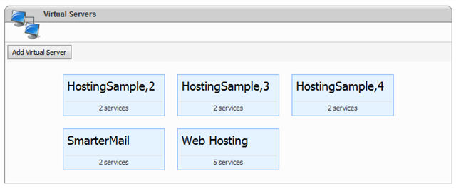
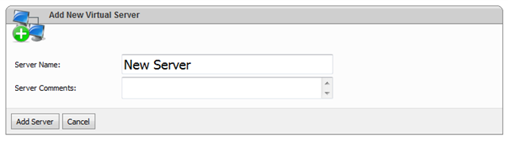
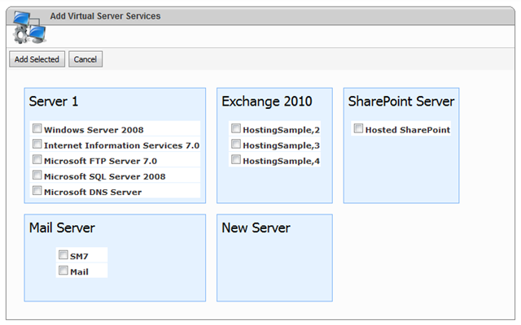

Setting up Virtual Servers
Translations:
What is Virtual Server?
Virtual server is a way to combine different services from several physical servers and build a new full-fledged server that can be used as a target server for hosting plans.
Virtual server is not related to Microsoft Virtual PC software or other virtualization technologies, but it is just a logical entity in WSP.
Creating Virtual Server
To view the list of Virtual Servers click "Configuration -> Virtual Servers" page on the top menu. The following screen will appear:

To add a new virtual server click "Add Virtual Server" button. The following screen will appear:

Specify the display name of the virtual server and optionally description. This description can be viewed then on other pages in server details pop-up.
Click "Add Server" button to add a new virtual server. "Virtual Server Details" screen will appear.
Adding Virtual Server Services
In order to add services to this virtual server click "Add Services" button:

System will show all servers registered in control panel with services that were set up on the servers (to set up services, refer to this article). Select services you would like to include in the current virtual server and click "Add Selected" button to add them and return to properties screen.
Specifying Server-Level DNS Records
[TBD]
Specifying Instant Alias
Instant aliases allow your customers to work with their sites prior to DNS distribution.
This is archived by creating for any created DNS zone a second DNS zone with the name mydomain.com.providerdomain.com where mydomain.com - customer domain and providerdomain.com - host (administrator or reseller) domain name with already propagated DNS zone and pointing to the current server.
Instant aliases can be defined on server (either physical or virtual) and hosting space levels.